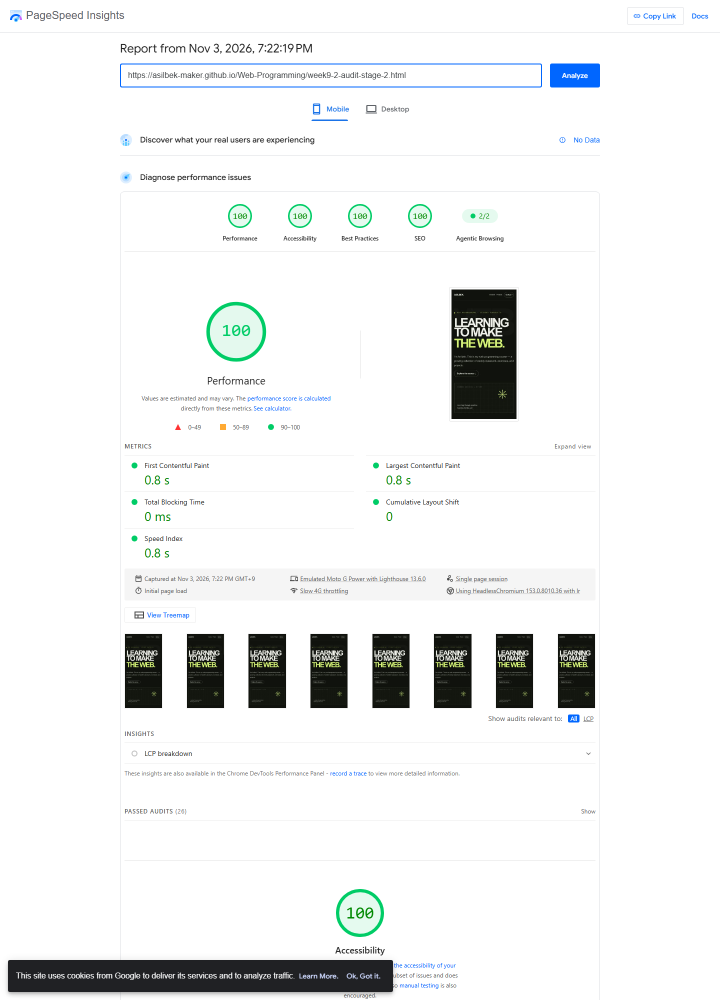

Web Programming · Week 9
Week 9_2 — Performance Optimization
A staged Lighthouse Performance report for my personal portfolio, with before-and-after evidence for each optimization sequence.
Page audited
Results by optimization sequence
All four stages were audited on Nov 3, 2026, with PageSpeed Insights on mobile using Lighthouse 13.6.0, an emulated Moto G Power, and Slow 4G throttling. Every run scored 100/100. First Contentful Paint and Largest Contentful Paint were 0.8 s, Total Blocking Time was 0 ms, Cumulative Layout Shift was 0, and Speed Index was 0.8 s in each report.
The after capture for one sequence is reused as the before capture for the next, so the results show the cumulative state at each step. The Lighthouse score and displayed metrics did not change; the optimizations target off-screen rendering and layout work that these page-load measurements did not register.
Sequence 1 — Defer below-the-fold rendering
Applied content-visibility and intrinsic sizing to the below-the-fold course and project sections.
Sequence 2 — Contain the project card
Applied layout and paint containment to the project card.

Sequence 3 — Avoid layout work on hover
Replaced the week-card hover's animated padding with a color-only transition.
What changed
I deferred rendering of below-the-fold sections with content-visibility and intrinsic sizing, so the browser can skip off-screen work without leaving the layout unreserved. I also contained the project card's layout and paint, and replaced the week-card hover's animated padding with a color-only transition to avoid layout work during hover.